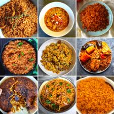

The History of Jollof Rice

Jollof Rice has its roots in the ancient Wolof Empire, located in present-day
Senegal and The Gambia. The dish evolved over centuries as West African
cultures interacted and shared foods, spices, and cooking styles.
Today, Jollof Rice is a beloved dish in Nigeria, Ghana, Sierra Leone, Liberia,
Cameroon, and more — each country adding its own special twist.
Key Ingredients in Authentic Jollof

Common ingredients used to make classic Jollof Rice include:
- Long-grain parboiled rice
- Tomatoes (fresh, paste, or puree)
- Bell peppers and hot peppers
- Onions and garlic
- Stock (chicken, beef, or vegetable)
- Seasonings (curry, thyme, bay leaf, bouillon cubes)
Different Styles of Jollof Rice

Across West Africa, several unique variations of Jollof Rice exist. Some popular types include:
- Nigerian Party Jollof: Smoky, spicy, and cooked in large pots over firewood.
- Ghanaian Jollof: Slightly milder, cooked with jasmine or basmati rice.
- Senegalese Thieboudienne: The original version, served with fish and vegetables.
- Liberian Jollof: Rich, hearty, and often includes mixed vegetables.
Why Jollof Rice Is More Than Just a Meal
.jpeg)
In West Africa, Jollof Rice is more than a recipe, it represents celebration, unity,
and culture. The dish is commonly served at weddings, parties, holidays, and family gatherings.
It has also inspired the fun and friendly "Jollof Wars," where countries debate who has
the best version of the dish. Whether you prefer Nigerian or Ghanaian Jollof, its impact
on food culture is undeniable.